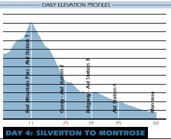
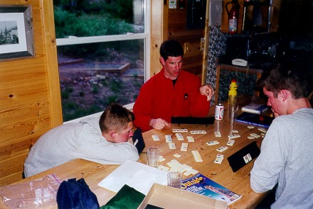
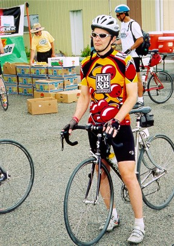
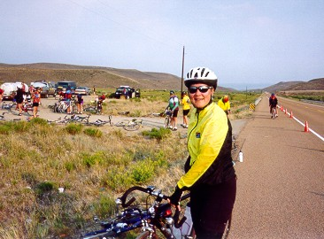
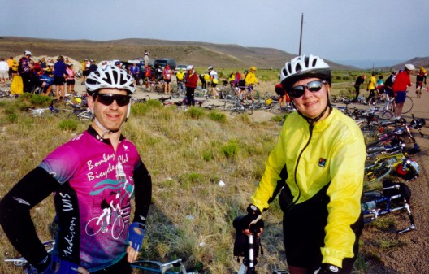
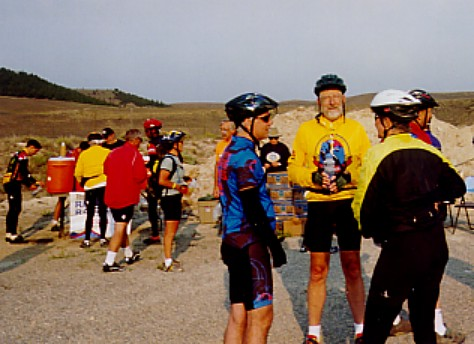

| We all need rest. During
a week long bike ride of nearly 500 miles, you need a lot of it.
Pat had trouble sleeping and it took its toll on day four, Montrose to
Gunnison.
During most overnights, we rested and
slept at motels. The exception was Silverton. Here Pat and I
camped with the Rockies horde. The rest of our group stayed
in a back country ski hut. This
resulted in Adam, Dan, and David biking all but the last kilometer of
Coal Bank, Molas, and Red Mountain Passes to reach the ski hut from
Durango.
 |
 |
| On day three
Adam, Dan, and David biked all of these 51 miles... |
...plus the
first 10 miles of day 4. Instead of 6,000 feet of
climbing, they had 8,000. |
These three strong guys didn't need as
much rest as Evan. His ride was cut short this day by a crash on
the descent into Silverton. Fortunately, with Jack's help, he was
able to take the Rockies bus to the top of Red Mountain Pass and with
borrowed wheels bike the one kilometer down to the ski hut.
 |
| The ski hut
was one of the highlights of the tour for Adam, Dan, David,
Evan, and Jack. [above] Evan and his two boys relax in the
ski hut about 10 miles and 2,000 feet above Silverton.
Evan was taking every available pain killer after his crash
earlier in the day. His soft tissue injuries would not
keep him from riding the rest of tour. How do you spell,
amazing? |
Lest I give the idea that Rockies is
nothing but hard, readers might be interested to know that we spend a
lot of time resting during the ride. Wonderful volunteers
staff rest stops that appear frequently during the ride. During
climbs rest stops are from seven to eleven miles apart. Even on
the flat sections, there is seldom a stretch longer than 18 miles
without an aid station. At these aid stations you'll find fruit
and sports drinks. Sometimes vendors will be there selling
fajitas, sandwiches, and other faire. Always, however, you'll find
extremely friendly and helpful volunteers.
 |

[left] I try to figure out how
to extend the tour by another week as one of the many volunteers
prepares oranges in the background. [above] Pat, looking
refreshed, gets ready bound up yet another mountain pass. |
 |
Evan and
Pat are wondering if I'm going to take the picture or just
stand there holding the camera. |
|
 |
Dan, Jack
and Pat talk over the possibility of hitching a ride to the
finish while cyclists fill up on sports drink in the
background. |
|
Occasionally we take longer respites
during the ride. In Ouray, Pat and I took four hours in the middle
of the day's ride to eat and visit the vapor caves. The Wiesbaden Hotel is built on top of underground
caverns. In these caverns are hot springs that make for the most
relaxing atmosphere you could imagine. Of course while we relaxed
in the caves and out by the pool a strong headwind came up to make the
remaining 35 miles into Montrose a hot, tough finish to the
day.
Well, that's it. See you next
year. Much appreciation goes to Paul Balaguer and the Ride the
Rockies staff and volunteers for putting on another great tour.
Thanks to Ellen Schroeder for hosting our group in both Nebraska and
Estes Park en route to Rockies and on the return. Thanks also to
Jack for allowing Pat and I to travel out Colorado with him in his
van. Finally, Pat and I extend our thanks to the other members of
team WIUS (Adam, Dan, David, Evan, and Jack) for being the cherished
friends that they are.
|


{kind=link}
{kind=link}
{kind=link}
{kind=link}
{kind=link}
{kind=link}